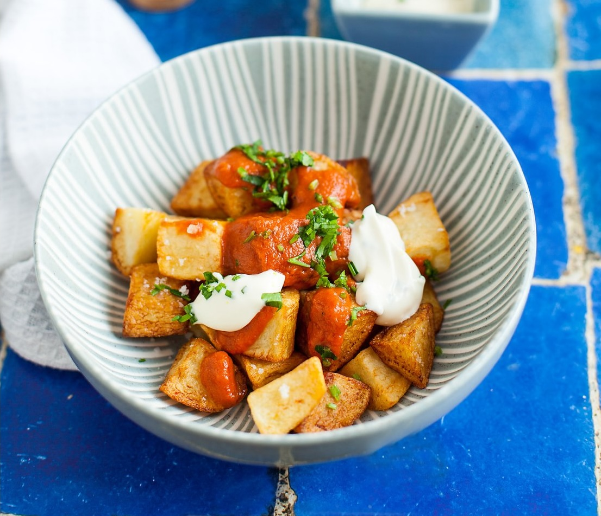

Пататас бравас — очень популярная испанская закуска из хрустящего картофеля, обжаренного в масле с острым томатным соусом. Часто идет в паре с соусом айоли. Не поленитесь приготовить два соуса — вместе с обоими картофель особенно хорош.
Пикантный томатный соус подойдет к голубцам с киноа, рисом и чечевицей (в этом случае печеный перец можно заменить вялеными томатами), а чесночный айоли станет хорошей пикантной заменой классическому майонезу. Хранятся соусы 5–7 дней.
Картофель можно готовить двумя способами: в большом количестве масла, пригодного для жарки при высоких температурах, либо на топленом или оливковом масле, предварительно отварив и остудив.
для соуса «брава» (200–250 мл):
для айоли: